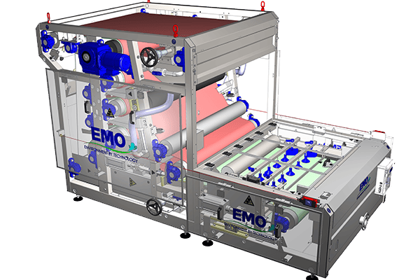

Mechanical sludge dewatering by helical screw pressure — silent, compact, and ultra-low energy solution for dewatering thickened municipal and industrial sludge. Operates in enclosed conditions, reducing odors and splashing.

The Screw Press is a compact, continuous mechanical dewatering machine that squeezes sludge through progressive helical screw pressure inside a perforated drum. As the screw rotates, sludge moves from the inlet toward the discharge end, where pressure progressively increases through the narrowing annular gap between the screw and the drum.
The filtrate (centrate) drains through the perforations of the drum, while the dewatered cake is discharged at the opposite end. The entire process is enclosed, eliminating odor and splashing issues common in open-system dewatering machines.
Sludge is pre-conditioned with polymer to form flocs that facilitate drainage in the drum.
Thickened sludge is fed into the drum inlet, where the helical screw begins gentle compression.
As sludge advances through the drum, pressure increases and filtrate drains through the perforations.
Dewatered cake is discharged continuously at the end of the drum, ready for disposal or subsequent drying.
Ideal for plants where noise, space, and energy are critical constraints
Silent, enclosed operation — compliant with strict environmental standards
Compact dewatering in tourist facilities with odor and noise sensitivity
Dewatering of organic sludge from food processing effluents
Integrated sludge treatment in large commercial facilities with on-site WWTP
Adding dewatering capacity to existing plants with minimal civil works
Our technical team evaluates your sludge characteristics and recommends the right Screw Press configuration.